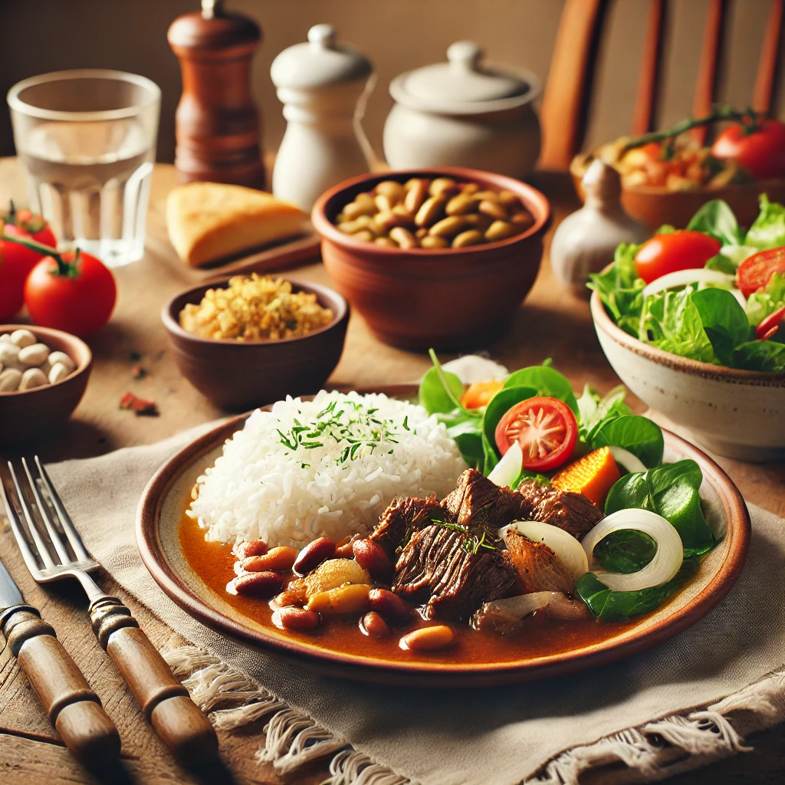
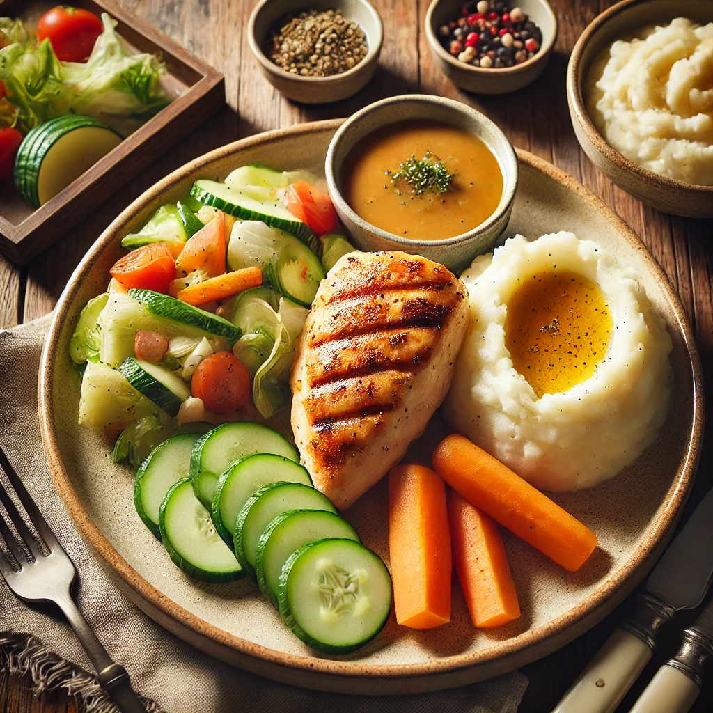

Nuestro Menú
| Comida | Nombre del Plato | Descripción | Precio |
|---|---|---|---|
|  | Menu 1 | Porción de carne jugosa acompañada de arroz blanco, ensalada fresca de lechuga y tomate, y una porción de papas al vapor. | $11.000 |
|  | Menu 2 | Delicioso pollo a la parrilla servido con vegetales al vapor, puré de papas cremoso y una ensalada fresca de pepino y zanahoria. | $11.000 |
 |
Menu 3 | Carne en guiso, acompañado de arroz blanco, frijoles sazonados y una ensalada mixta de hojas verdes, tomate y cebolla. | $11.000 |